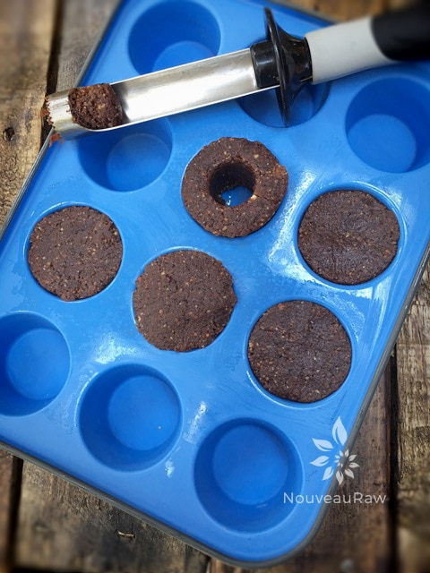
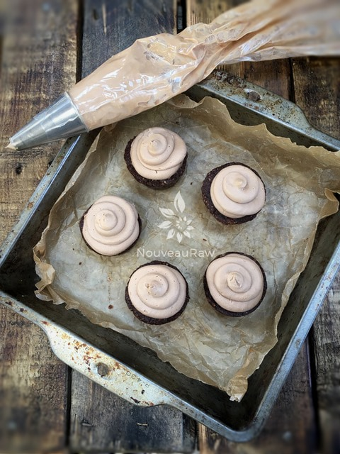
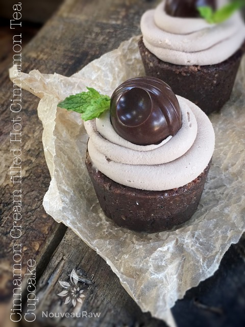

Cinnamon Cream filled Hot Cinnamon Tea Cupcake

~ raw, vegan, gluten-free ~
Yes, I realize the name is quite a mouth-full but then so is this delicious brownie! So it is only fitting. I worked hard to find the perfect balance of flavors in this little bundle of joy.
I had three heavy components that could easily steal the spotlight. The raw cacao, the cinnamon, and the cayenne. Instead of just one of them being the star, I made the sure the entire cast was on an even playing ground.
With your first bite, the texture and chocolate instantly affirm that you are eating a brownie, as you chew, the hint of cinnamon comes in and then after you swallow, the cayenne says, “Me, me! Don’t forget I am here too!” But not to worry it’s not very hot (could be if you wanted it to be) it has just enough heat to give that, “Hmm, what is that I taste?” look.
But let’s not forget the Cinnamon Cream. Now here, I wanted the battle of textures. The chewiness of the brownie and the creamy mouth-feel of a thick creamy center.
When you were growing up did you ever eat Ding Dongs or Twinkies? I did, and the first thing I did was stick my tongue right into the center cream and scoop it out.
It’s sort of funny the little rituals we create when we are young. For instance, for years I peeled my grapes. Yep… peeled my grapes. Lol, Why? Oh, who knows. I must have been extremely bored and the habit just sort of stuck… but luckily not into my adulthood. :) Anyway, I hope you enjoy these as much as we did. I had Bob take a tray of them to our favorite local coffee shop, and they were a hit. So, with that said, I leave you so that you can get busy making these.
Brownie – 29 single servings (1.5 Tbsp)
Cinnamon Cream – yields 2 cups
Decoration options:
Preparation:
Cake:
- In a food processor, combine the walnuts, cacao, tea bag contents, coconut flour, cayenne, and salt. Process till the walnuts resemble a small crumble.
- Add the raisins, dates, and vanilla. Process until the batter starts to stick together.
- Be careful that you don’t over-process and release too much of the natural oils in the walnuts.
- If the batter feels too dry, add 1 Tbsp of water at a time, making sure not to over-process.
- Pack mini muffin tins with 1 1/2 Tbsp of brownie batter. Level the tops flat.
- Use an apple corer to remove the center.
- Remove the cakes from the mold. You can decide on whether you want to dehydrate them or not. I have done it both ways, and both are good.
- Dehydrate on the mesh screen for 1 hour at 145 degrees (F), reduce to 115 degrees (F), and continue drying for 8-10 hours. Remove and allow them to cool before frosting.
Cinnamon Cream:
- Place the coconut butter jar in a hot water bath to soften it. Open the jar and stir the coconut butter until it is creamy and liquefied.
- In the blender combine the cashews, water, coconut butter, lemon juice, cinnamon, stevia, and salt. Blend until smooth.
- This can take 2-4 minutes, depending on the blender.
- Stop the machine every once in a while to scrape the sides down and to check the texture.
- The frosting will appear very thin, too thin actually… this is to be expected. Place the blender carafe in the freezer until it starts to thicken up enough to pipe it.
- Scoop the cream into a piping bag, fitted with a medium tip.
- Pipe the cream into the centers of the cupcakes and on the top.
- Decorate if desired. Sprinkle shredded coconut on top, dust with cacao powder, add candies on top, or even chopped nuts.
- Place in the fridge to firm up the cream before serving.
Culinary Explanations:
- Why do I start the dehydrator at 145 degrees (F)? Click (here) to learn the reason behind this.
- When working with fresh ingredients, it is important to taste test as you build a recipe. Learn why (here).
- Don’t own a dehydrator? Learn how to use your oven (here). I do however truly believe that it is a worthwhile investment. Click (here) to learn what I use.



© AmieSue.com